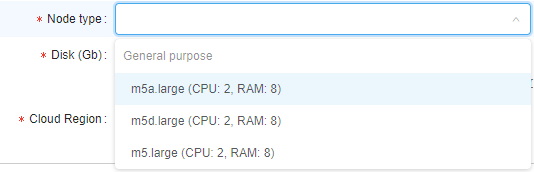

12.4. Edit/delete a user
User shall have ROLE_ADMIN to edit/delete users.
Edit a user
For edit a user:
- Open the Users subtab in the User management section of the system-level settings.
- Find a user.
- Click the Edit button in the row opposite the user name:
- Pop-up window will appear:

At this form, there are several blocks of details/settings for a user.
User info
Main details' section about the user, that contain general info fields like user name, date of the user registration in the Platform, user email address, first and last names, e.g.:
Default data storage
Here you can select default data storage for a user:

Groups (roles) management
In this block you can set groups and roles for the selected user:

For more information about changing a set of the roles/groups for the specific user see 12.8. Change a set of roles/groups for a user.
Attributes

In this block you can set metadata tags (attributes) for a user. These tags represent key/value pairs, same as pipeline/folder tags. For more information see 17. CP objects tagging by additional attributes.
"Blocking" notifications track
One of the special attribute that is set automatically - information about the notifications confirmation:

Via that attribute you can view, which "blocking" notifications were confirmed by the user (about system notifications see here).
This attribute is shown only for users that confirmed at least one "blocking" notification.
By default, this attribute has the following pair:
- KEY -
confirmed_notifications(that name could be changed via the system-level preferencesystem.events.confirmation.metadata.key) - VALUE - link that shows summary count of confirmed notifications for the user
To open the detailed table with confirmed notifications for the user:
- Click the VALUE link:

- Here you can view detailed information about confirmed notifications - their titles, messages and datetime of the confirmation:

- Also you can open "raw"
JSONview of the detailed table, if necessary. For that, click the EDIT button under the detailed table:

- Here you can edit the contents. Click the SAVE button to save changes:

Launch options

In this block you can specify some restrictions for a specific user on allowed instance types, price types, jobs visibility, etc.
To apply configured launch options for a user, click  button in the right bottom corner of the pop-up. This action will save all made changes in the user settings (not only launch options) and close the pop-up.
button in the right bottom corner of the pop-up. This action will save all made changes in the user settings (not only launch options) and close the pop-up.
Allowed instance count
This setting (Allowed instance max count) allows to restrict the number of instances a user can run at the same time.
This is useful to address any bugs as the users' scripts may spawn hundreds of machines without a real need.
Note: this restriction is not applied to the users with the ROLE_ADMIN role.
Behavior is configured by the following way: for example, if this setting for the user is specified to 5 - they can launch 5 jobs at a maximum. This includes worker nodes of the clusters.

If the user tries to launch a job, but it exceeds a current limit - the warning and errors will be shown.
Imagine that user has already launched 5 jobs with the set limit also equal 5.
The user starts a new instance (which is going to be a 6th job):
- GUI will warn the user at the Launch page:

- GUI will warn the user, before submitting a job:

- If the user confirms a run operation - it will be rejected:

Similar warnings are shown if the user will try to start a cluster or an autoscaled cluster.
In this case, even if there are some spare slots, but the preparing cluster may exceed it eventually - the corresponding warning will appear. E.g., imagine that user has already launched 3 from 5 allowed jobs and tries to start an autoscaled cluster:
Note: if user has reached the limit, warning will be also shown in case when the user will try to start a new job via
pipeCLI. Job will be rejected, e.g.:
ViapipeCLI, user can view the allowed instances count to be launched - using the commandpipe users instances.

Such restrictions could be set not only for a user, but on another levels too.
Next hierarchy is set for applying of instances max count (in descending order of priority):
- User-level - i.e. specified for a user - as described above. This overrides any other limit for a particular user.
- User group level - i.e. specified for a group/role. Count of jobs of each member of the group/role is summed and compared to this parameter. If a number of jobs exceeds a limit - the job submission is rejected. How to configure see here. This overrides a global limit for a specific user group.
- (global)
launch.max.runs.user.global- can be used to set a global default restriction for all the users. I.e. if it set to 5, each Platform user can launch 5 jobs at a maximum. See 12.10. Manage system-level settings for details.
Allowed instance types
Here, there are two settings that can restrict allowed instance types for a specific user:
- Allowed instance types mask - this mask restricts allowed instance types for launching tools, pipelines and configurations (i.e. any user's runs).
Example of usage: If you want the user to be able to launch runs with only "m5..." instances types, mask would bem5*:

In that case, before that user will launch any tool/pipeline/configuration, dropdown list of available node types for them will be like this:
- Allowed tool instance types mask - this mask restricts allowed instance types only for tools' runs.
This mask has higher priority for launching tool than Allowed instance types mask. I.e. when both masks are set - for the launching tool, Allowed tool instance types mask will be applied.
Example of usage: if you want the user to be able to launch tools with only "large m5..." instances types, mask would bem5*.large*:

In that case, before that user will launch any tool, dropdown list of available node types for them will be like this:

Setting restrictions on allowed instance types is a convenient way to minimize a number of invalid configurations' runs.
Such restrictions could be set not only for a user, but on another levels too.
Next hierarchy is set for applying of specified allowed instance types (in descending order of priority):
- User level - i.e. specified for a user - as described above.
- User group level - i.e. specified for a group/role of a user. If user is a member of several groups - list of allowed instances will be summarized across all the groups. How to configure see here.
- Tool level - i.e. specified for a tool, that a user tries to launch. How to configure see 10.5. Launch a Tool.
- (global)
cluster.allowed.instance.types.docker- system preference that defines allowed instance types for tools. See 12.10. Manage system-level settings for details. - (global)
cluster.allowed.instance.types- system preference that defines allowed instance types for pipelines/tools/configurations. See 12.10. Manage system-level settings for details.
After specifying allowed instance types, all GUI forms that allow to select the list of instance types (configurations/launch forms) - will display only valid instance types, according to hierarchy above.
Allowed price types
This field may restrict, what price types are allowed for a specific user (for launching any job).
Example of usage: if you want the user to be able to launch only "On-demand" runs, select it:

In that case, before that user will launch any run, dropdown list of price types for them will be like this:

Setting restrictions on allowed price types is a convenient way to minimize a number of invalid configurations' runs.
Such restrictions could be set not only for a user, but on another levels too.
Next hierarchy is set for applying of specified allowed price types (in descending order of priority):
- User level - i.e. specified for a user - as described above.
- User group level - i.e. specified for a group/role of a user. If user is a member of several groups - list of allowed price types will be summarized across all the groups. How to configure see here.
- Tool level - i.e. specified for a tool, that a user tries to launch. How to configure see 10.5. Launch a Tool.
Jobs visibility
This field may restrict the visibility of runs at the Active Runs page for users who are non-owners of these runs.
Note: this restriction is not applied to the users with the ROLE_ADMIN role.
Example of usage: if you want the user to be able to view all pipeline runs (for that pipelines on which user has corresponding permissions), select "Inherit":
Therefore USER4, that is owner of the pipeline, will view all runs of that pipeline, e.g.:

If you want the user to be able to view only own runs launched, select "Only owner":
Therefore USER4, that is owner of the pipeline, will view only own runs of that pipeline, e.g.:
If this setting is not specified for a user - for them "Inherit" behavior is applied by default.
Next hierarchy is set for applying of jobs visibility (in descending order of priority):
- User level - i.e. specified for a user - as described above.
- Group level - i.e. specified for a group/role. How to configure see here.
- (global)
launch.run.visibility- system preference that defines jobs visibility globally. See 12.10. Manage system-level settings for details.
Credentials profiles
In these fields, specific interfaces can be specified for a user:
- Cloud Credentials Profiles - here, specific interfaces can be assigned for a user. Such interfaces allow to use seamless authentication in Cloud Provider services.
For details and examples see here. - Default Credentials Profile - setting allows to select one of Cloud Credentials Profiles assigned to the user as the default profile.
For details and examples see here.
Possibility to revert changes
In certain cases, there could be convenient to undo all changes in a user profile when modifying it - without closing the form.
The admin has such ability:
- open the User management tab
- select the desired user to modify, click the Edit button to open the popup with the user's settings
- edit some settings
- if needed to revert done changes - click the REVERT button at the bottom of the form (Note: it's possible only before saving!):

- all done unsaved changes are reverted. The REVERT button becomes disabled:
Note: in such way all unsaved changes of user settings could be reverted - Default data storage, Roles & Groups list, Attributes and Launch options.
Block/unblock a user
To block user:
- Open the Users subtab in the User management section of the system-level settings.
- Find a user.
- Click Edit button in the row opposite the user name.
- In the opened pop-up window click the BLOCK button in the left bottom corner.
- Confirm the blocking:
To unblock user:
- Open the Users subtab in the User management section of the system-level settings.
- Find a user.
- Click Edit button in the row opposite the user name.
- In the opened pop-up window click the UNBLOCK button in the left bottom corner.
- Confirm the unblocking:

GUI Impersonation
Cloud Pipeline supports "Impersonation" feature. It allows admins (users with the ROLE_ADMIN role) to login as a selected user into the Cloud Pipeline GUI and have the same permissions/level of access as the user.
Note: while running any job in the "impersonated" mode - the costs will go to that user and a linked billing-group.
Start/Stop impersonation
- Login to the Cloud Pipeline using an administrative account
- Open the Users subtab in the User management section of the system-level settings.
- Find a user.
- Click the Edit button in the row opposite the user name - to load a user's profile:

Click the Impersonate button in the top-right corner. - Cloud Pipeline GUI will be reloaded using the selected user:

- While in the "Impersonation" mode, the following changes happen to the GUI:
- Main menu will turn orange, indicating that the impersonation mode is ON
- Logout button will be changed to the Stop impersonation button:

- Hovering over the Stop impersonation button will bring the ID of the user, whose account is currently active, e.g.:

- To stop the impersonation and revert back to the own admin account - click the Stop impersonation button.
Delete a user
To delete a user:
- Open the Users subtab in the User management section of the system-level settings.
- Find a user.
- Click the Edit button in the row opposite the user name.
- In the opened pop-up window click the Delete button in the left bottom corner.
- Confirm the deletion: